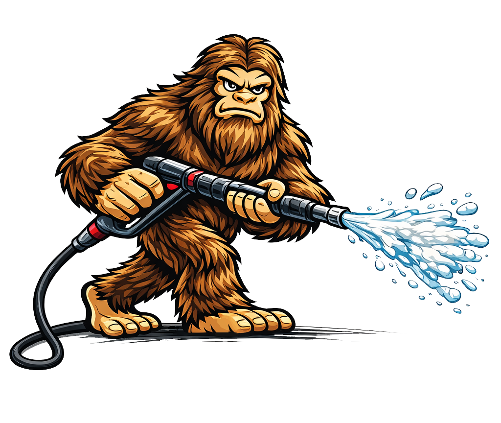
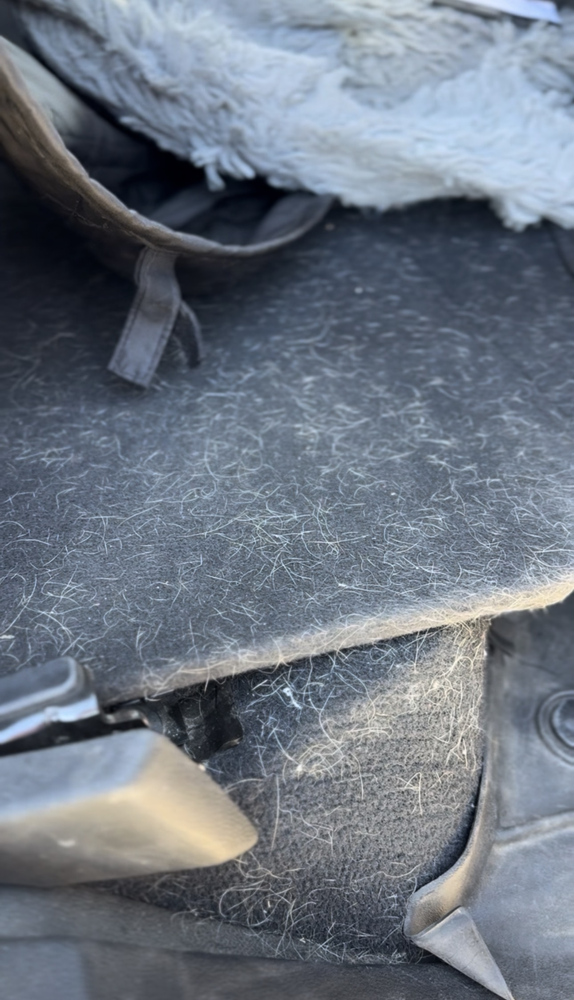
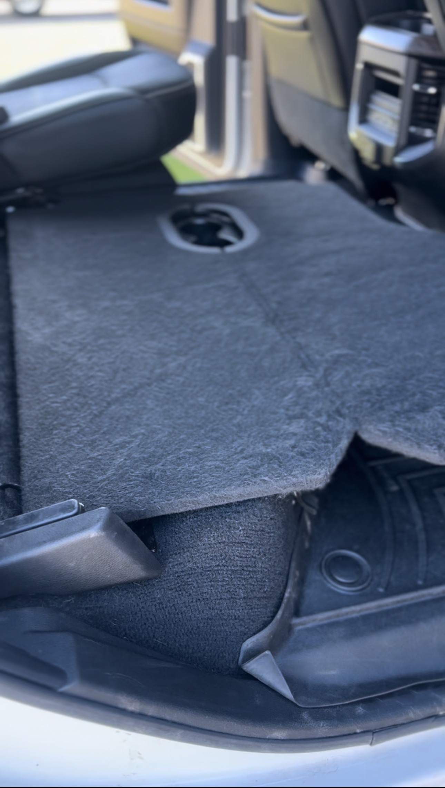
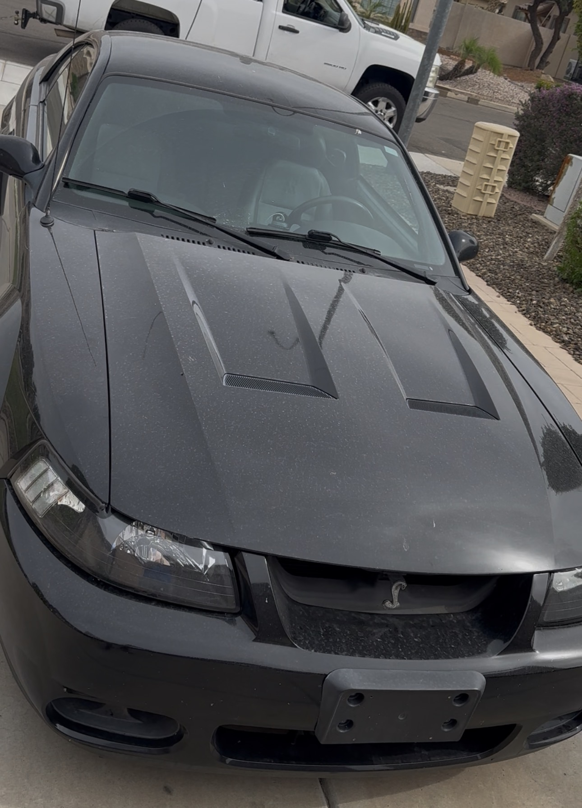
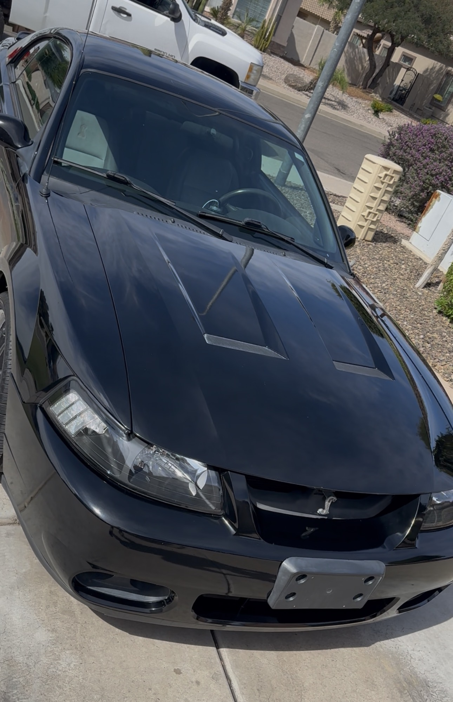
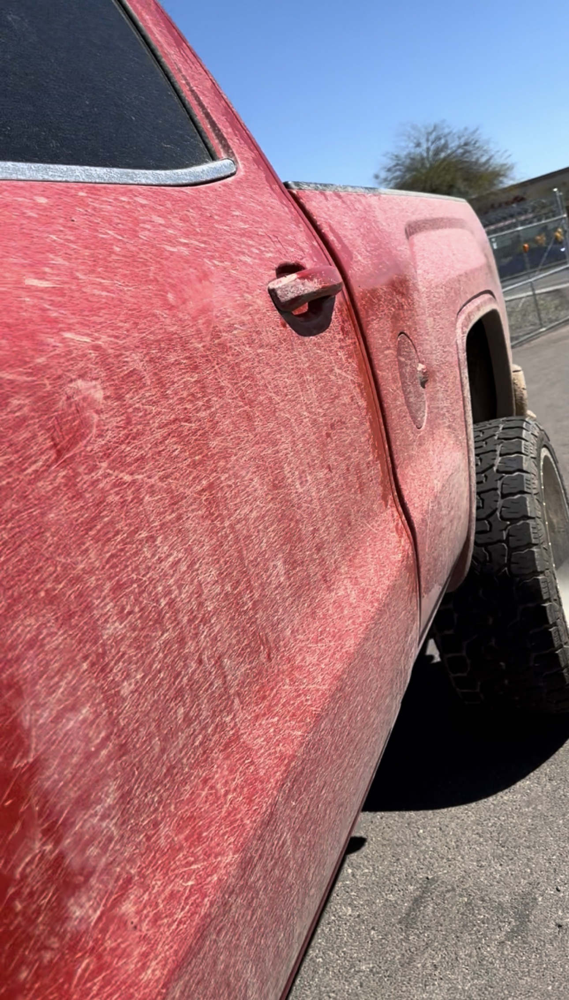
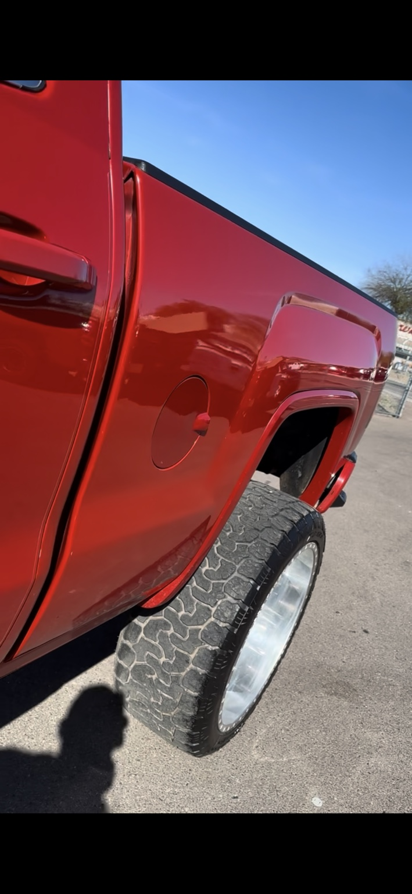
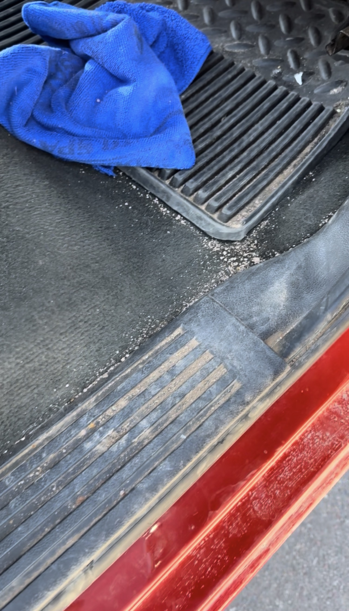
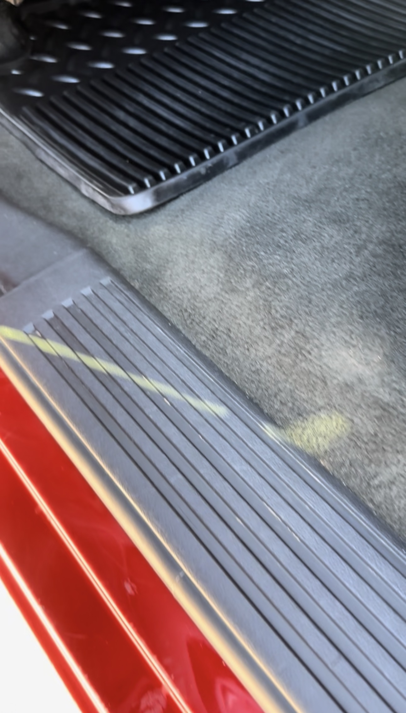

Full Interior + Exterior
A complete inside-and-out reset for vehicles that need the full Beastman treatment.
- Deep interior cleaning
- Full exterior detail
- Bundle savings built in

BEASTMAN AUTO DETAILProfessional mobile detailing built around honest work, premium results, and craftsmanship without shortcuts.
Our mission is simple: do exceptional work, treat people right, and build relationships that last longer than the detail. At Beastman Auto Detail, we take no shortcuts, treat every vehicle like our own, and work to earn something more valuable than a sale—your trust.
From a maintenance refresh to a full reset, every service is designed to be easy to understand and easy to book.
A complete inside-and-out reset for vehicles that need the full Beastman treatment.
From a light refresh to a full deep clean, including cracks, crevices, seats, mats, windows, and hard surfaces.
View interior options →Hand-wash focused exterior care with wheels, tires, bugs, glass, protection, and trim depending on package.
View exterior options →Clay bar, paint enhancement, sealants, paint correction, and ceramic coating options for deeper restoration and protection.
Explore protection →Drag the slider to see real before-and-after results from Beastman Auto Detail.








Exceptional service matters just as much as the final shine.
★★★★★“Professional, thorough, and the vehicle looked incredible when it was finished.”
Google Customer
★★★★★“The attention to detail and customer service are exactly why we’ll keep coming back.”
Google Customer
★★★★★“Easy to book, honest pricing, and a night-and-day difference in the car.”
Google Customer
At Beastman Auto Detail, our mission is to build lasting relationships through exceptional service, honest work, and craftsmanship without shortcuts. We treat every vehicle like it’s our own, take the time to do the job right, and stand behind our work when we fall short.
We’re not here just to detail your vehicle—we’re here to earn your trust, protect your investment, and become the friend you call when you want it done right.
Experience the Beastman standard →Clear expectations, transparent pricing, and no unnecessary upselling.
We take the time to do it right instead of rushing to the next vehicle.
Mobile detailing that comes to you across the East Valley.
Yes. Beastman Auto Detail is a mobile service. We serve San Tan Valley, Queen Creek, Gilbert, Chandler, Mesa, Tempe, Florence, and Coolidge.
Choose Mini for vehicles that are already in generally good condition and need maintenance. Choose Full for a more comprehensive reset. You can also add individual services during booking.
Your online total is an estimate based on the services selected. Final pricing is subject to an in-person vehicle inspection, and no additional work will begin without your approval.
Yes. Those services require an inspection or quote because the time and price depend on the vehicle’s condition and the level of correction or protection needed.
Premium detailing that comes to you. Explore local service details, tips for your appointment, and the right care for your vehicle across these eight Arizona communities.
We are a mobile business. Service is arranged at a suitable customer location; these areas are not storefront locations. Book Now →
Build your detail, see your pricing, and choose the service that fits your vehicle.
Book Your Detail